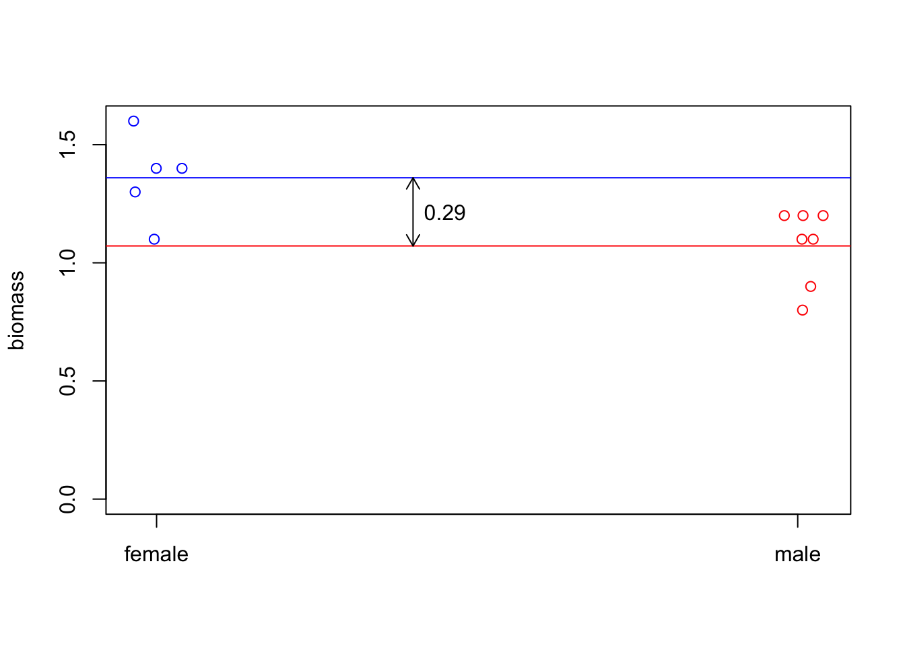
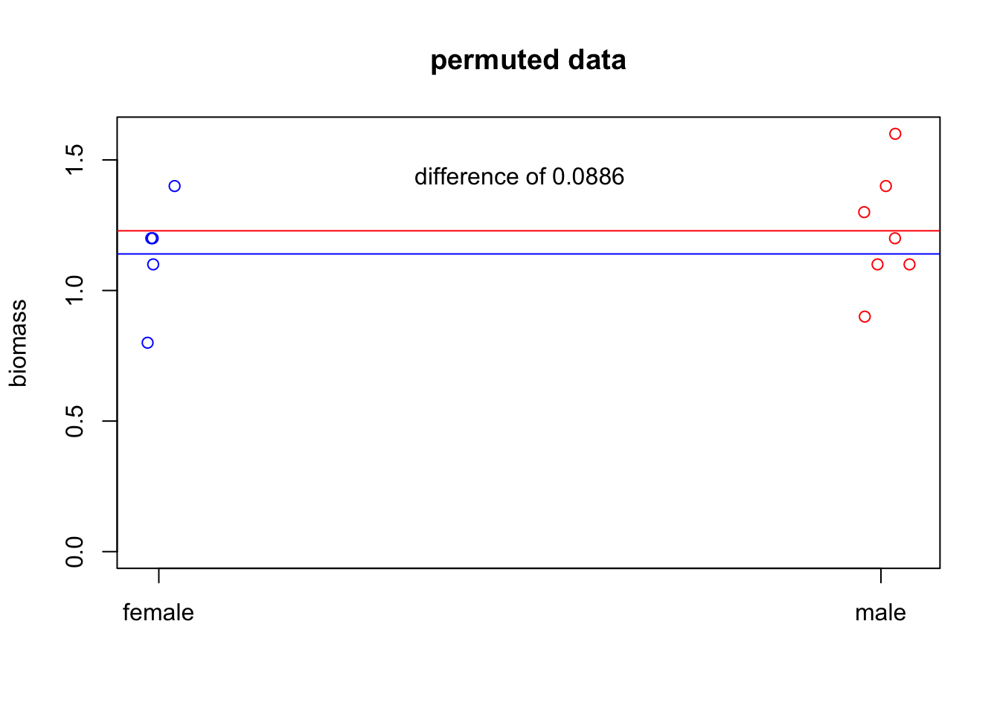
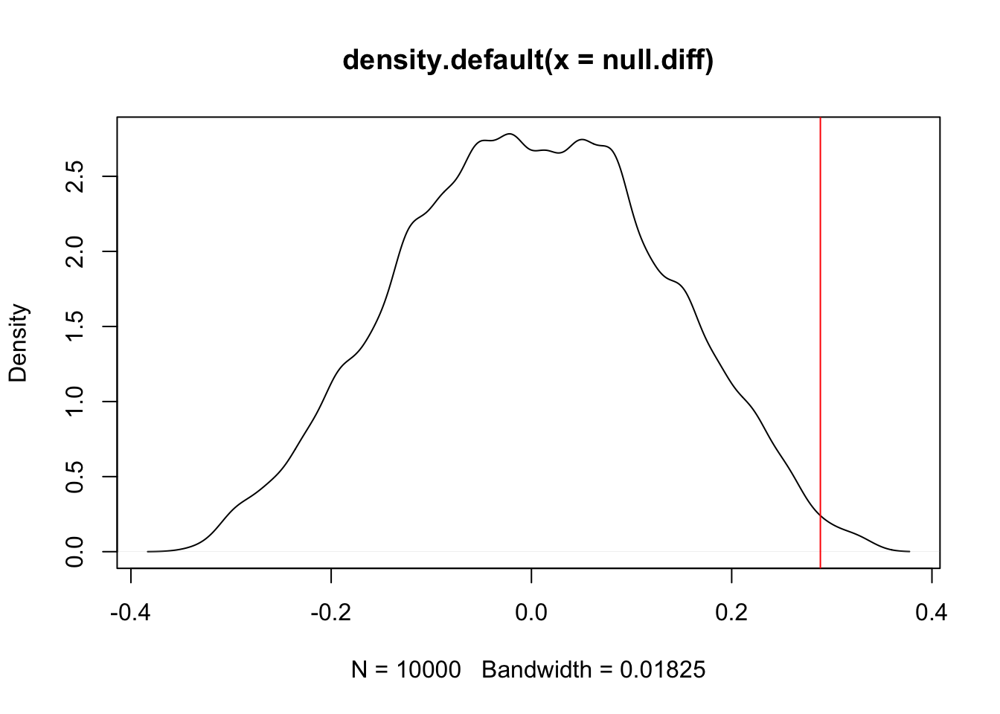

Let’s start by making some simple data to work with.
gender=c("m","m","m","m","m","m","m",
"f","f","f","f","f")
biomass=c(1.1, 1.2, .9, 1.2, .8, 1.1, 1.2,
1.1, 1.4, 1.3, 1.6, 1.4)
data=data.frame(biomass=biomass,
gender=gender)
col.vec=gender
col.vec[col.vec=="m"]='red'
col.vec[col.vec=="f"]='blue'If we plot the data, they look like they’re notably different from each other.
plot(jitter(as.numeric(data$gender),factor=.2),
data$biomass,
type='p',
ylim=c(0,max(data$biomass)),
xaxt='n',
ylab="biomass",
xlab="",
col=col.vec
)
f.mean=mean(data$biomass[data$gender=="f"])
m.mean=mean(data$biomass[data$gender=="m"])
axis(1, at=c(1,2), labels=c("female","male"))
#add line for female average
abline(h=f.mean,
col='blue',xpd=FALSE)
abline(h=m.mean,
col='red',xpd=FALSE)
arrows(x0=1.4,
y0=m.mean,
y1=f.mean,
length=.1,
code=3
)
text(x=1.45,y=mean(c(f.mean,m.mean)),
labels=as.character(round(abs(diff(c(f.mean,m.mean))), 2))
)
Is that significant? That is, is our data sufficiently unlikely if our null hypothesis \(H_0\) (females and males have the same mean) is true?
If \(H_0\) is true, then it shouldn’t matter which of our individuals were males and which were females. So we can try randomly re-assigning the genders to our biomasses.
dat.new=data
dat.new$gender=sample(data$gender,replace=FALSE) #this is the key here! Sample predictor without replacement
#okay, let's plot this again.
col.new=as.character(dat.new$gender)
col.new[col.new=="m"]='red'
col.new[col.new=="f"]='blue'
plot(jitter(as.numeric(dat.new$gender),factor=.2),
dat.new$biomass,
type='p',
ylim=c(0,max(dat.new$biomass)),
xaxt='n',
ylab="biomass",
xlab="",
col=col.new,
main="permuted data"
)
f.mean.new=mean(dat.new$biomass[dat.new$gender=="f"])
m.mean.new=mean(dat.new$biomass[dat.new$gender=="m"])
axis(1, at=c(1,2), labels=c("female","male"))
#add line for female average
abline(h=f.mean.new,
col='blue',xpd=FALSE)
abline(h=m.mean.new,
col='red',xpd=FALSE)
# arrows(x0=1.4,
# y0=m.mean.new,
# y1=f.mean.new,
# length=.1,
# code=3
# )
text(x=1.5,y=.9*max(dat.new$biomass),
labels=paste("difference of", round(abs(diff(c(f.mean.new,m.mean.new))), 4))
)
So that’s one permutation. But let’s generate the distribution of differences under the null hypothesis.
N=10000 #number of times to permute things
null.diff=rep(-99,N) #vector to store the differences
#we want to randomly resample a ton of times, so we'll use a for loop.
for(i in 1:N){
dat.new=data
dat.new$gender=sample(data$gender,replace=FALSE) #this is the key here! Sample predictor without replacement
f.mean.new=mean(dat.new$biomass[dat.new$gender=="f"])
m.mean.new=mean(dat.new$biomass[dat.new$gender=="m"])
null.diff[i]=f.mean.new-m.mean.new
}Now that we have the distribution of our test statistic (difference in means between males and females) under the null hypothesis, we can ask if our observation is an outlier of this distribution:
dens=density(null.diff)
plot(dens)
abline(v=f.mean-m.mean,xpd=FALSE,col='red')
#What's the one-tailed p value? What fraction of permutations have a difference of means higher than our observed difference of means?
sum(null.diff>f.mean-m.mean)/N## [1] 0.0043#what about two-tailed?
sum(abs(null.diff)>abs(f.mean-m.mean))/N## [1] 0.0166lmPermWe don’t actually need to write out the permutation test ourselves! We’ll use my data set of caterpillar growth on different milkweed plants, with plant traits as predictors.
require(lmPerm)
#lmPerm has the lmp() function, which fits linear models in what is probably a familiar format.
dat.cat=read.csv('curated_caterpillar_data.csv')
out.lmp=lmp(cat.weight ~ tough+lat.mean+sla,data=dat.cat)## [1] "Settings: unique SS : numeric variables centered"summary(out.lmp)##
## Call:
## lmp(formula = cat.weight ~ tough + lat.mean + sla, data = dat.cat)
##
## Residuals:
## Min 1Q Median 3Q Max
## -0.0122452 -0.0043345 -0.0002516 0.0035568 0.0163015
##
## Coefficients:
## Estimate Iter Pr(Prob)
## tough 4.636e-05 272 0.272
## lat.mean 3.760e-01 51 0.882
## sla 5.634e+00 529 0.161
##
## Residual standard error: 0.007419 on 43 degrees of freedom
## Multiple R-Squared: 0.0815, Adjusted R-squared: 0.01742
## F-statistic: 1.272 on 3 and 43 DF, p-value: 0.2961# Look familiar?
# Iter is a meaasure of the number of iterations used before the algorithm decided it had the probability estimated well enough
#We can also use an anova test, with aovp()
out.aovp=aovp(cat.weight ~ tough+lat.mean+sla,data=dat.cat)## [1] "Settings: unique SS : numeric variables centered"summary(out.aovp)## Component 1 :
## Df R Sum Sq R Mean Sq Iter Pr(Prob)
## tough 1 0.00011993 1.1993e-04 203 0.3300
## lat.mean 1 0.00001368 1.3680e-05 77 0.5714
## sla 1 0.00009390 9.3904e-05 182 0.3571
## Residuals 43 0.00236657 5.5037e-05Note that the standard R approach for lm significance testing uses sequential testing. This is generally BAD, which why it’s better to use the drop1() function to test whether terms should be included in the model. aovp() uses this improved approach by default, but if you want to to be equivalent to anova/lm output, you can give the argument seqs=TRUE to make aovp use the (bad) approach of lm and anova.
Note that lmp() doesn’t handle multi-stratum data, nor random effects; these are tricky to handle with permutation tests (which data points are exchangeable? In what way?). However, aovp() can handle multi-stratum data, just like aov() does. It can also handle blocking terms, with
out.aovp=aovp(cat.weight ~ tough+lat.mean+sla + Error(date),
data=dat.cat)## [1] "Settings: unique SS : numeric variables centered"summary(out.aovp)##
## Error: date
## Component 1 :
## Df R Sum Sq R Mean Sq Pr(Exact)
## tough 1 0.00091066 0.00091066 1
## Residuals 1 0.00020891 0.00020891
##
##
## Error: Within
## Component 1 :
## Df R Sum Sq R Mean Sq Iter Pr(Prob)
## tough 1 0.00001140 1.1395e-05 51 1.0000
## lat.mean 1 0.00002065 2.0648e-05 66 0.6061
## Residuals 42 0.00142495 3.3927e-05For more complex models, the R package coin is worth looking at. It’s less intuitive to use, but provides permutation-based alternatives for a multitude of standard frequentist tests.
If you’re using lmPerm, I highly recommend checkout out the vignette (https://cran.r-project.org/web/packages/lmPerm/vignettes/lmPerm.pdf), which in addition to providing great explanations for the underlying theory and applications, also uses examples from Harry Potter.